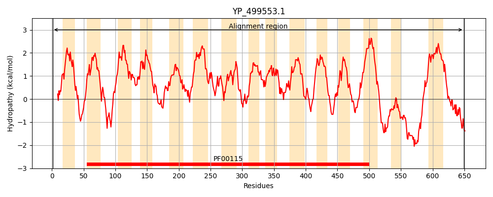
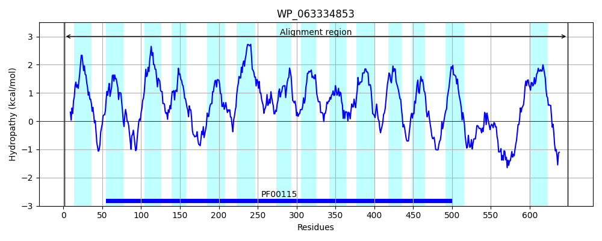
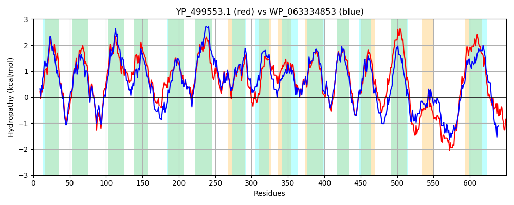

Hit Accession: WP_063334853
Hit TCID: 3.D.4.5.2
Hit Description: gnl|BL_ORD_ID|21299 gnl|TC-DB|WP_063334853.1|3.D.4.5.2 cytochrome aa3 quinol oxidase subunit I [Bacillus subtilis]
Mach Len: 650
e:0.000000
Query TMS Count : 15
Hit TMS Count: 14
TMS-Overlap Score: 13.800000
Predicted Substrates:CHEBI:5584;hydron
BLAST Alignment:
Score: 2251 , Bit scores: 871 bits, E-value: 0.0e+00, Alignment length: 650, Percentage identity: 62
Query: 1 MNFPWDQLLVKGNWMITMAQIGAPFLVIGLIAVITYFKLWKYLYKEWFTSVDHKKIGIMYLICAVLMFVRGGIDALLIRAQLTVPDNKFLESNHYNEIFSTHGVIMIIFMAMPFIFGLWNIVVPLQIGARDVAFPVLNNVSFWLFFAGMILFNLSFIIGGSPAAGWTNYAPLAG-EFSPGPGVNYYLIAIQISGLGTLATGINFFVTILRCKTPTMKFMQMPMFTVTTFITTLIVILAFPPLTVALALMTTDRIFDTAFFTVAHGGMPMLWANFFWVWGHPEVYIVILPAFGIYSEIIPTFARKRLFGHQSMVWATAGIAFLSFLVWVHHFFTMGNGALINSFFSISTMLIGIPTGVKLFNWLLTLYKGRITFESPMLFSLAFIPNFLLGGVTGVMLAMASADYQYHNTYFLVAHFHYTLVTGVVFACLAGLIFWYPKMMGYKLNETLNKWCFWFFMIGFNVCFLPQFILGLDGMPRRLYTYMPSDGWFLLNLISTIGALLMAIGFLFLVVSIVYSHFKSPREATGDNWDGLGRTLEWTTASAIPPKYNFAITPDWNDYDTFVDMKEHGRHYLDNHNYKDIHMPNNTPVGFWIGIFMTIGGFFLIFETVIPALICLFGIFGTMIYRSFQIDHGYHIPAAEVAETEARLRE 649
M F WD+ V G+ +I AQ+ I +I V+TYFK WK+L+ EW T+VDHKK+GIMY+I AV+M RGG+D L++RAQL +P+N FL+SNHYNEIF+THG IMIIFMAMPF+ GL N+VVPLQIGARDVAFP LNN+SFW FF G +LFN+SF+IGGSP AGWT+Y PLA + SPGPG NYYL+ +QI+G+GTL TGINF VTIL+ +T M M+MPMFT TT IT +I++ AFP LTVALAL++ DR+F FFT+ GGMPMLWAN FW+WGHPEVYIVILPAFGI+SEII +FARK+LFG+++MV + I+ LSFLVW HHFFTMGN A +NSFFSI+TM I IPTGVK+FNWL T+YKGRI+F +PML++LAFIPNF++GGVTGVMLAMA+ADYQYHNTYFLV+HFHY L+ G VFAC AG IFWYPKM G+KLNE + KW FW FMIGFN+CF PQ+ LGL GMPRR+YTY P+DGW LN IST+GA +M +GFL L +I YS S RE +GD+W G+GRTL+W T+SAIPP YNFA+ P+ D F+ MKE +K IHMP+N+ F++ + + GF L+FE ++ L G+ M+ RSF+ D+GY+I E+ ETE ++ E
Sbjct: 1 MKFKWDEFFVTGDPLILGAQVSIALSTIAIIFVLTYFKKWKWLWSEWITTVDHKKLGIMYIISAVIMLFRGGVDGLMMRAQLALPNNSFLDSNHYNEIFTTHGTIMIIFMAMPFLIGLINVVVPLQIGARDVAFPYLNNLSFWTFFVGAMLFNISFVIGGSPNAGWTSYMPLASNDMSPGPGENYYLLGLQIAGIGTLMTGINFMVTILKMRTKGMTLMRMPMFTWTTLITMVIIVFAFPVLTVALALLSFDRLFGAHFFTLEAGGMPMLWANLFWIWGHPEVYIVILPAFGIFSEIISSFARKQLFGYKAMVGSIIAISVLSFLVWTHHFFTMGNSASVNSFFSITTMAISIPTGVKIFNWLFTMYKGRISFTTPMLWALAFIPNFVIGGVTGVMLAMAAADYQYHNTYFLVSHFHYVLIAGTVFACFAGFIFWYPKMFGHKLNERIGKWFFWIFMIGFNICFFPQYFLGLQGMPRRIYTYGPNDGWTTLNFISTVGAFMMGVGFLILCYNIYYSFRYSTREISGDSW-GVGRTLDWATSSAIPPHYNFAVLPEVKSQDAFLHMKEEKTELYPESKFKKIHMPSNSGRPFFMSVAFGLAGFGLVFEWYWMGVVGLVGVLLCMVLRSFEYDNGYYISVDEIKETERKISE 649 | Protein Hydropathy Plots: |
|---|
|  |  |
Pairwise Alignment-Hydropathy Plot:
|
|---|
|  |